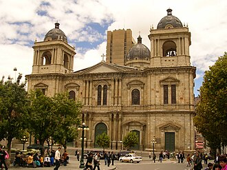
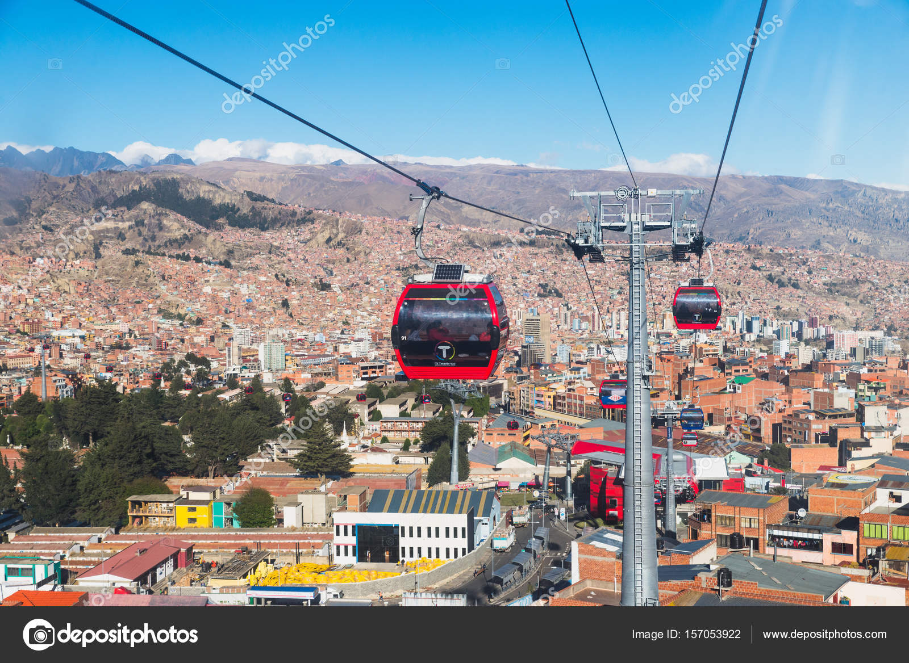
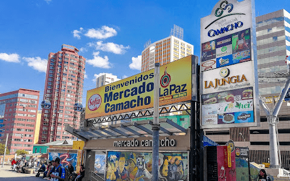

Centro histórico y político de La Paz, rodeado de edificios emblemáticos y museos.

Icono arquitectónico de la ciudad que refleja la historia religiosa y cultural de Bolivia.
Un paisaje surrealista de formaciones rocosas únicas, perfecto para caminatas y fotografía.

Ofrece vistas panorámicas espectaculares de la ciudad y sus montañas circundantes.
Sumérgete en las tradiciones locales y festivales coloridos de La Paz.

Explora los mercados de la ciudad y disfruta de artesanías y gastronomía típica.